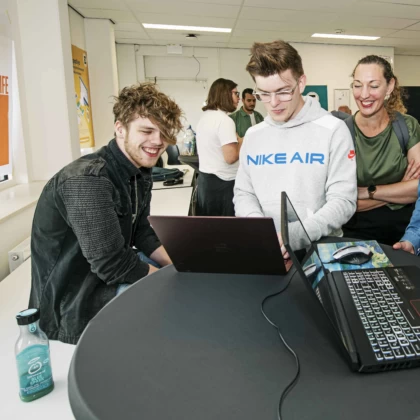

|
Hello, welcome to my profile! I'm Elena Petkova and I've chosen to continue my education at the HZ University of Applied Sciences. My study choice in the university is the HBO-ICT programme.
Here are links for more info about the university and the programme:
HZ University of Applied Sciences and HBO-ICT programme
|
Having in mind that the programme includes different courses, which are useful for my development as a student, I think that it also has a lot of opportunities for various jobs. It could expand my knowledge and help me gain skills for creating large, real-world projects.
It's a suitable programme for me because I have a strong interest in the field of IT and would like to explore one of the three paths that it offers.
|

|